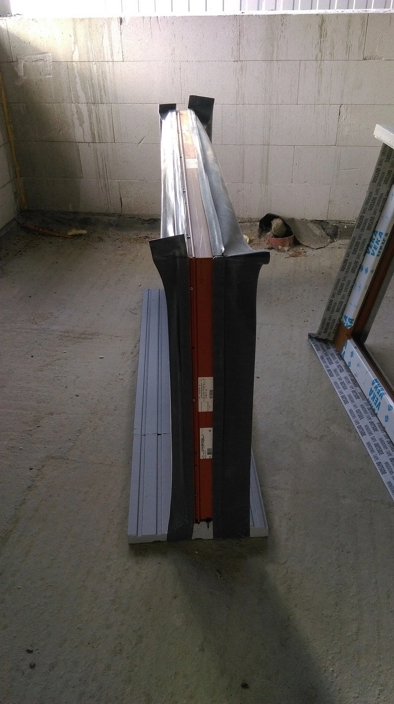
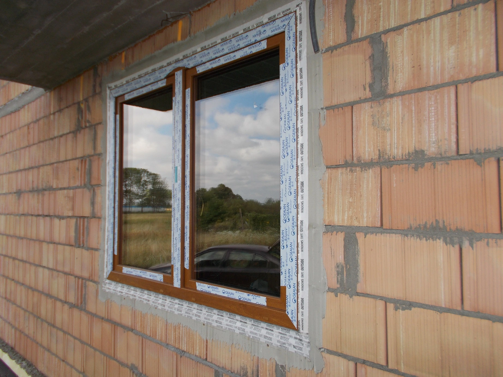
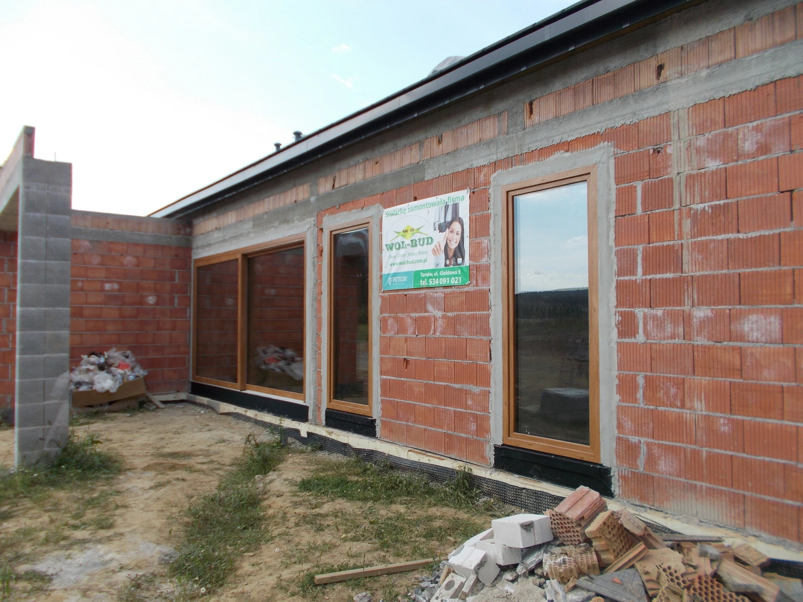
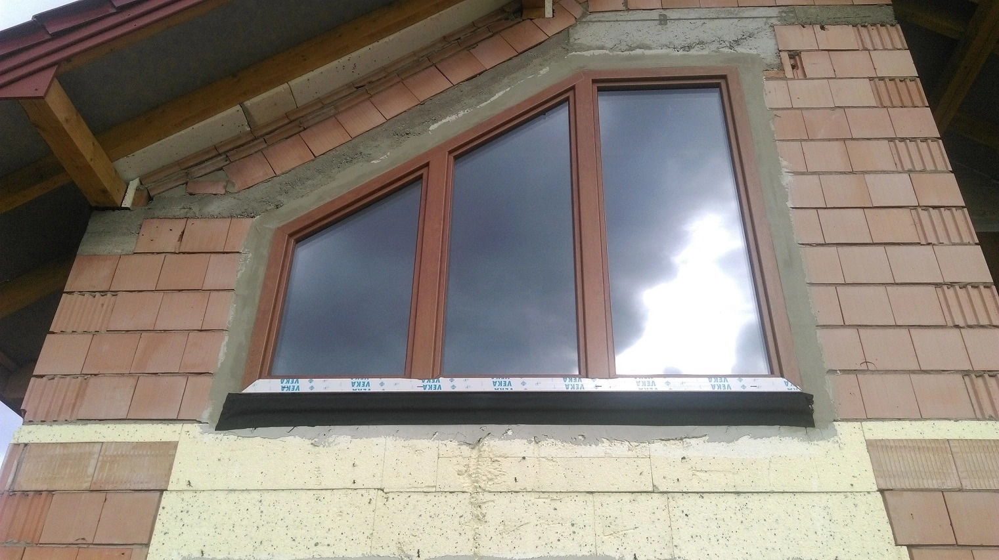
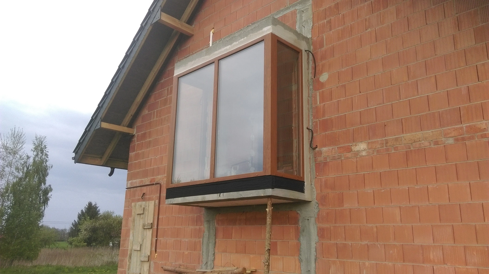
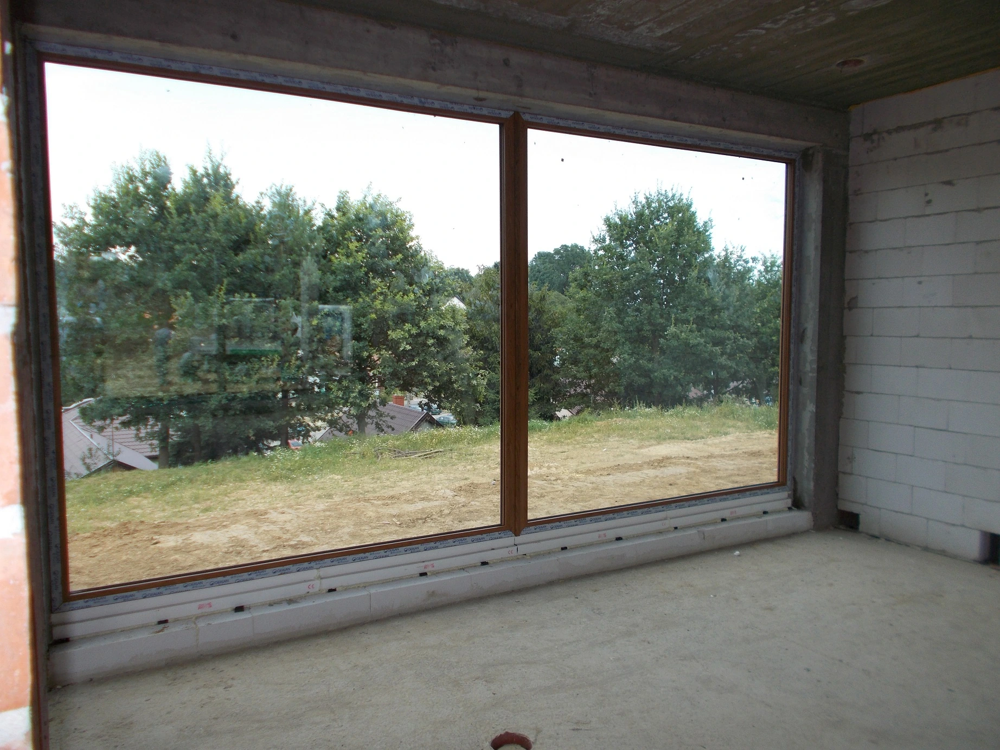
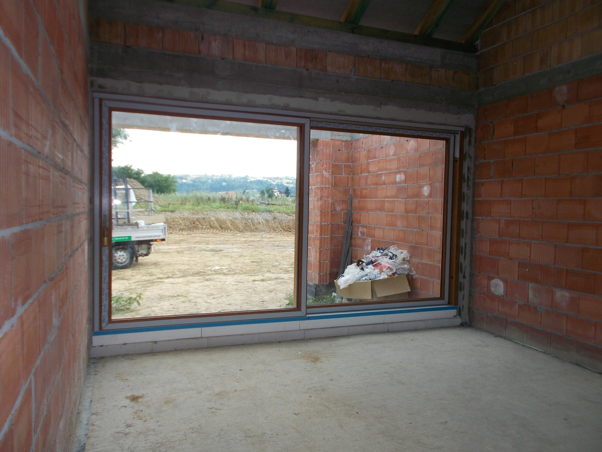

Pełny opis montażu
Bardzo częstym sposobem montażu w naszej firmie jest nie tylko standardowy montaż z wykonaniem izolacji samą pianką, ale ciepły i przede wszystkim bardzo szczelny montaż warstwowy, który w naszej ocenie zupełnie zmienia jakość montażu okien.
Ciepły montaż zapewnia wiele korzyści dla inwestora:
- najważniejsze – ogromną poprawę szczelności montażu – aż o co najmniej 90 % mniejsza przepuszczalność powietrza dla różnych prędkości wiatru
- eliminację mostków cieplnych występujących podczas zawilgocenia szczeliny montażowej przy zwykłym montażu na piance przez skraplanie się pary wodnej w szczelinie montażowej
- brak występowania zagrzybienia lub pleśni w szczelinach montażowych oraz na szpaletach wewnętrznych wokół okien
- większy komfort użytkowania okien bez przedmuchów, przemarzania itp.
- zapobieganie degradacji pianki z biegiem lat poprzez eliminację zawilgocenia pianki
- gwarantowany zwrot z inwestycji w ciepły montaż w ciągu kilku sezonów grzewczych
Sposób i harmonogram tego typu montażu wygląda w naszej firmie następująco:
- wyrównanie otworów okiennych od strony wewnętrznej i zewnętrznej klejem lub zaprawą, by później odpowiednio wykleić folie na równy mur
- nałożenie gruntu na wyrównane wcześniej otwory dla maksymalnie pewnego łączenia folii z murem
- wyklejenie w odpowiedni sposób folii
- wyklejenie po stronie zewnętrznej paroprzepuszczalnej folii Protape WTO Total o szerokości 100 mm z klejem na całej szerokości folii do wyklejenia na mur
- wykonanie izolacji termicznej przy pomocy pianki montażowej
- wyklejenie po stronie wewnętrznej paroszczelnej folii Protape Hydrotech Plus o szerokości 100 mm z klejem butylowym na całej szerokości folii do wyklejenia na mur
- zabezpieczenie folii zewnętrznej przed promieniami UV przy pomocy kleju do siatki elewacyjnej
Rewelacyjnym uzupełnieniem ciepłego montażu warstwowego jest zastosowanie termoparapetów podokiennych, które zapewniają:
- eliminację wszelkich mostków cieplnych dołem okien na styku parapetu zewnętrznego i wewnętrznego – miejsce, gdzie standardowo parapety przegradza tylko listwa podokienna
- kolosalną poprawę szczelności montażu dołem okien dzięki zastosowaniu fabrycznie wklejonej taśmy rozprężnej dolegającej do dolnej części okna oraz dodatkowe zaaplikowanie kleju uszczelniającego przez montażem okna na termoparapet
- systemowe rozwiązanie przygotowujące pod odpowiednio stabilny montaż parapetów wewnętrznych i zewnętrznych
- brak potrzeby stosowania klinów podporowych dołem, które powodują przerwanie ciągłości izolacji okna
- znakomitą poprawę przebiegu izoterm cieplnych – wypuszczenie najchłodniejszych izoterm jak najdalej na zewnątrz w stronę warstwy ocieplenia
Harmonogram wykonania ciepłego montażu warstwowego oraz rodzaje termoparapetów podokiennych: Wyrównanie otworów 1 Wyrównanie otworów 2 Wyklejenie folii okiennych Wyklejenie folii na mur Zabezpieczenie folii zewnętrznej 1 Zabezpieczenie folii zewnętrznej 2 Zabezpieczenie folii zewnętrznej 3 Zabezpieczenie folii zewnętrznej 4 Termoparapet podokienny Termoparapet balkonowy Podwalina klinarytowa do drzwi HST
Zdjęcia z montażu
wyrównanie otworów 1
wyrównanie otworów 2

wyklejanie folii 1

wyklejanie folii
zabezpieczenie folii

zabezpieczenie folii 2

zabezpieczenie folii od zewnątrz 1

zabezpieczenie folii od zewnątrz 2
termoparapet okienny

termoparapet balkonowy
